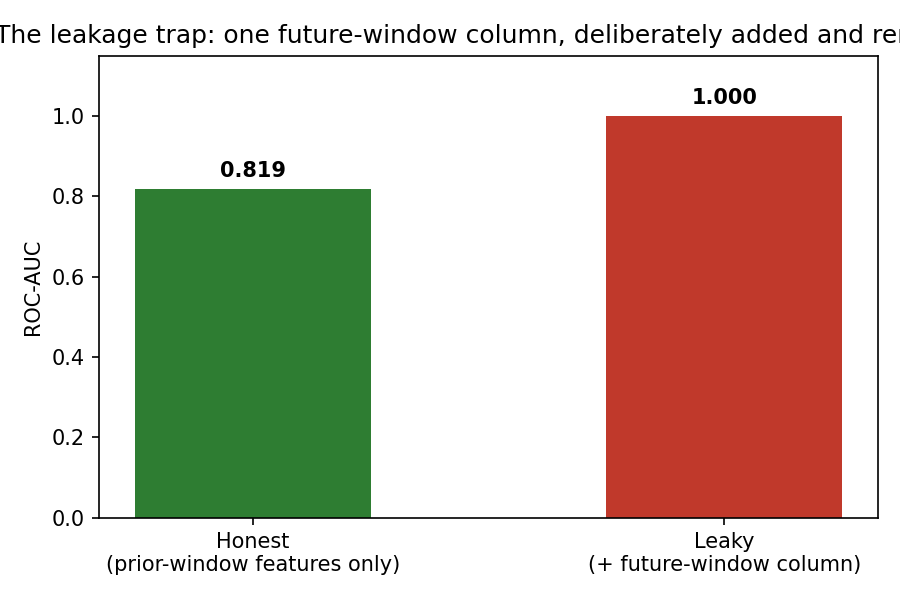
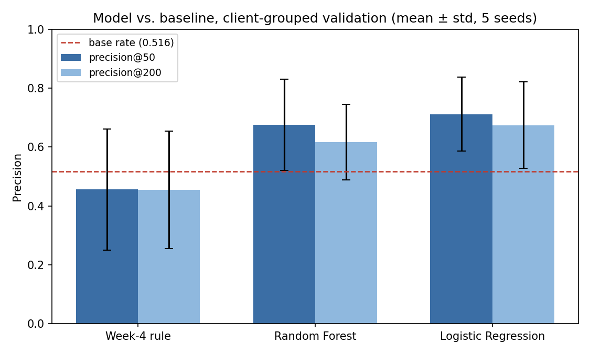
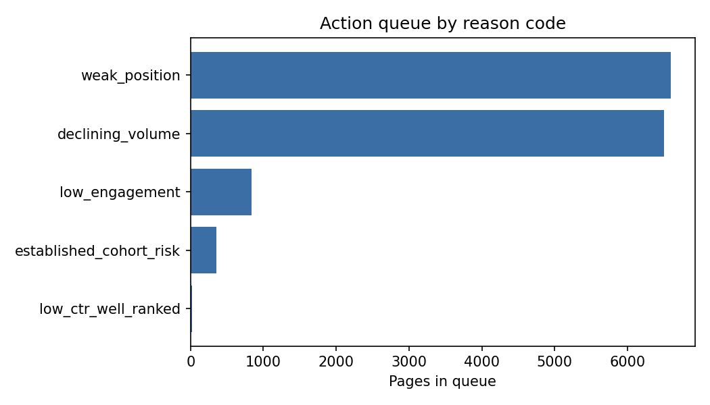

Picture a FlyRank content lead on a Monday morning, responsible for a multi-client portfolio of several thousand pages. They have time to properly review perhaps 50-200 pages this week — the rest will simply not get looked at. Today, the only readily available signal for choosing which 50-200 is a snapshot comparison: is a page's last 30 days below its previous 30 days. That flag describes where a page already stands, not where it's heading — by the time it fires, a page has often already been losing ground for a while, and the flag itself doesn't say which of the hundreds of currently-flagged pages is most worth the visit today.
This is the real, concrete problem this project set out to solve: not "predict SEO performance" in the abstract, but answer one narrow, checkable question for that Monday-morning content lead — using only signals available before a fixed decision point, can a model produce a short, ranked, reason-coded shortlist that genuinely outperforms both random prioritization and a transparent hand-built rule (the kind of rule FlyRank's own refresh and CTR-fix flags already use), measured on data the model never saw during training? Everything that follows — the baseline, the model, the leakage checks, the ranked recommendations — exists in service of answering that one question for that one person.
Source: the FlyRank ML Internship warehouse release, fact_content_daily_performance
(daily grain, partitioned by month, Jan 2025–June 2026) joined to dim_content and
dim_clients. Development window: the mid-panel month March 2026 —
9,841,378 rows, 331,437 distinct content items, 55 clients active that month. The panel's final
month (June 2026) was deliberately never opened — it remains a sealed, untouched holdout for
future work.
Deliberately excluded, and why:
trend_direction / trend_pct — confirmed (correlation ≈ 1.0) to be
a same-window snapshot comparison, not a forward-looking outcome. Used only as a baseline
reference, never as a model feature.days_since_update — knowable for only ~12% of rows at the decision date used
(the rest reflect an update timestamp after the decision date), and reversed direction
on that thin slice. Excluded on evidence, not assumption.content_hash_id, client_hash_id) are
pseudonymous hashes provided by the release itself — used only for joins and grouped-split
boundaries, never as model features, and never resolved to a real name anywhere in this project.
Label (proxy, stated plainly): declined_next_28d — 1 if a page's
total search impressions over the 28 days after the decision date are lower than the 28
days before it, 0 otherwise. A genuine forward-window comparison, with an enforced gap between
the feature window and the label window.
Features (all knowable strictly before the decision date): prior 28-day impressions, clicks, click-through rate, average search position, sessions, a GA4-coverage flag, and content age.
Baseline: a transparent rule — flag a page if it's visible and ranking well (position 1–20, ≥100 prior impressions) but has low click-through (<2%). Built only after testing its assumptions directly: a staleness-based gate was tried first and found the opposite of the assumption behind FlyRank's own refresh flags (decline rate fell, not rose, with page age, on the minority of rows where staleness was even knowable at decision time) — so it was dropped before shipping, rather than kept on a disproven premise.
Model: Logistic Regression — the task is a yes/no outcome with an observed label, evaluated by ranking, which is the direct case for this method. A Random Forest was trained on the identical split specifically to test whether added complexity earned its keep.
Validation: a client-grouped split — every page from one client stays entirely in train or entirely in test, never both — reported as mean ± std across five different grouped splits, after directly observing that a single split is unreliable (test-set base rate swung from 0.387 to 0.631 across seeds, with only 9 clients per test fold).
Leakage checks: a deliberate trap (one future-window column added on purpose, score jumped from 0.819 to a suspicious 1.000 ROC-AUC, then removed); a timeline check confirming zero overlap between feature and label windows; a formal train-with/train-without test on the one feature whose importance looked disproportionate; and a before/after check isolating a real +0.064 precision@50 gap attributable to client-level memorization in a naive random split.

All numbers below: client-grouped validation, mean ± std across 5 splits, same features, same label, same evaluation code path for every method.
| Method | Base rate | Precision@50 | Precision@200 |
|---|---|---|---|
| Week-4 hand-built rule | 0.516 ± 0.104 | 0.456 ± 0.206 | 0.454 ± 0.200 |
| Random Forest | 0.516 ± 0.104 | 0.676 ± 0.155 | 0.617 ± 0.128 |
| Logistic Regression | 0.516 ± 0.104 | 0.712 ± 0.125 | 0.674 ± 0.147 |

The hand-built rule averaged below the observed base rate — its CTR-vs-position signal held up in an isolated check but did not survive being turned into a combined ranking rule. Random Forest did not clearly outperform Logistic Regression (lower mean, higher variance) — added complexity was tested directly and did not earn its keep.
Several top-ranked pages in the actual queue showed click-through at or near 0.00% on tens or hundreds of thousands of impressions — plausible as a real content problem, but equally consistent with a broken tracking pixel, and flagged for a human Search Console check before acting.
Logistic Regression's largest standardized coefficients were prior clicks (-0.51), prior sessions (+0.28), and prior impressions (+0.25) — volume and engagement signals dominate, not click-through rate alone (CTR's coefficient was the smallest of the seven), despite CTR being the one signal that survived an earlier isolated check. Random Forest's importance instead leaned heavily on content age — a direct train-with/train-without test confirmed this is a real but modest signal, and cross-checking against client-level averages suggests it functions more as a between-client cohort pattern (older client portfolios decline more, on average) than a clean per-page decay clock. Worth stating as a genuine, if slightly humbling, finding: the signal that looked strongest in isolation did not end up as the dominant driver of the model that actually won.
Reason codes and mapped actions, from the held-out test-client scoring run:
| Reason code | Share | Action |
|---|---|---|
weak_position | 46.1% | Deprioritize unless business-critical; consider consolidation |
declining_volume | 45.4% | Flag for content refresh (add depth, update examples) |
low_engagement | 5.8% | Expand page depth; check for a better-matching competitor page |
established_cohort_risk | 2.5% | Route to a portfolio-level review, not a single-page edit |
low_ctr_well_ranked | 0.2% | Rewrite title/meta description; check search-intent match |

established_cohort_risk flag describes a client-level pattern, not a
page-level defect — route to a portfolio conversation, don't edit the single page in
isolation.| Trigger | Rough threshold |
|---|---|
| Precision@50 on a fresh month drops toward the base rate | Within ~0.05 of base rate |
| Precision@50 drops below the hand-built rule's number | Below 0.456 |
| Test-set base rate shifts far outside the historical range | Outside 0.25–0.63 |
| GA4 coverage changes sharply from baseline | ±5 points |
| Client mix changes (new/departed clients) | Any material change |
Repo: github.com/ZainabFatima-hzf/ML-flyRank
— notebooks under work/notebooks/ (w01 through w07, plus
capstone.ipynb). Random seed for grouped-split evaluation: 42
(primary), cross-checked against seeds 0, 1, 2, 99 for stability.
The sealed June 2026 holdout month was never opened during this project; a sealed-evaluation pass is flagged as future work, not claimed as already done.